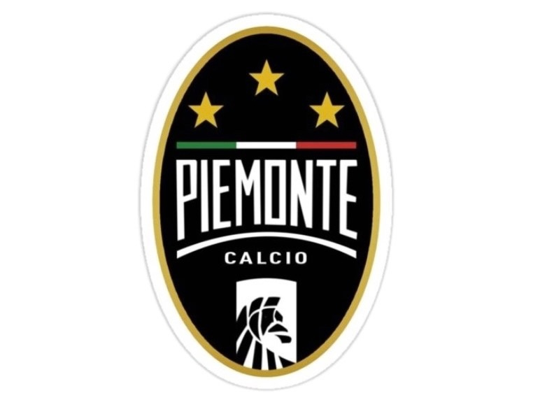

Турнир по мини-футболу
ССО ТюмГУ
Белый Волк
Мини-футбольный клуб был создан в феврале 2023 года. Основателем является Стрюков Владислав. В составе клуба на данный момент 23 игрока. Является студенческим объединением Университета.

Выпускники
Ветераны
Эта команда существует с 2013 года. В её состав входят выпускники различных институтов.

ССО ТюмГУ
Сытый кот
Мини-футбольный клуб был создан в марте 2022 года.
Основателем является Долгоколенков Данил.
В составе клуба на данный момент 14 игроков.
Является студенческим объединением Университета.

Студенты
Piemonto Calcio
Команда состоит из студентов разных институтов. Они выступали на 48-ой спартакиаде ТюмГУ и дошли до полуфинала.

Студенты